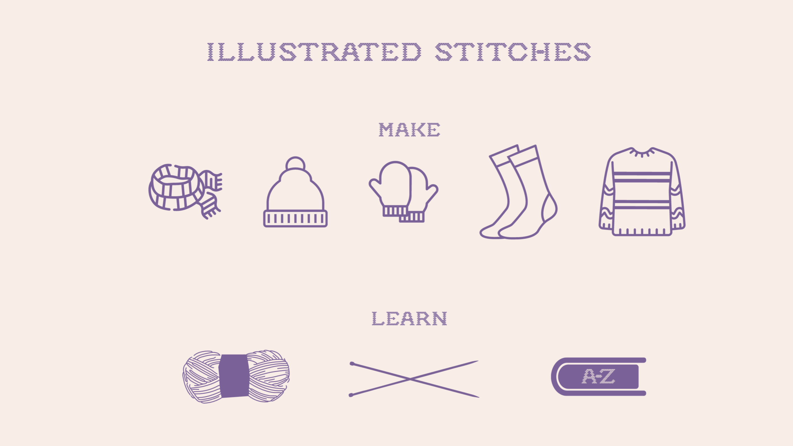
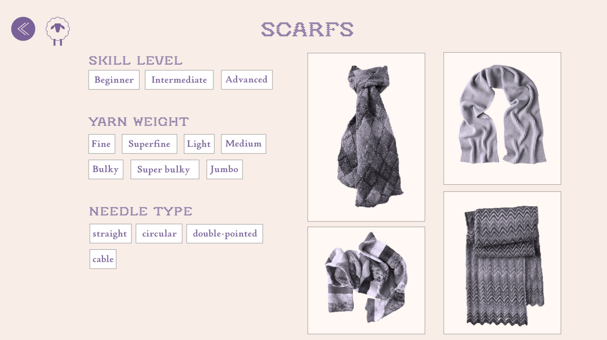
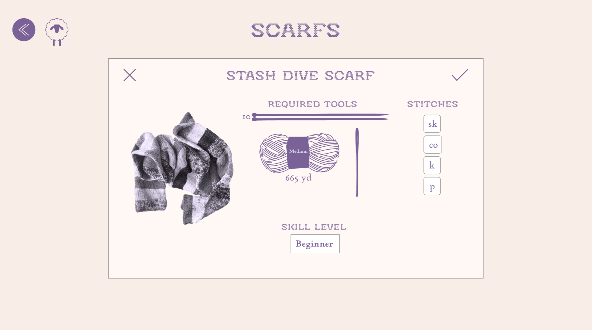
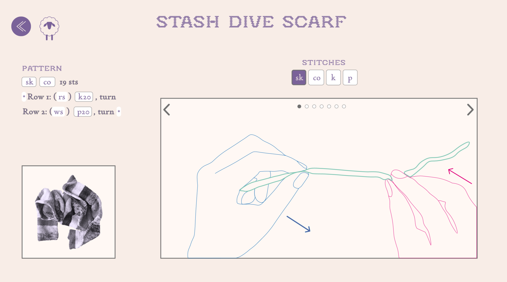

Information Design Tutorials
The website is designed so that the user would select a pattern using a series of images and filters and then be follow the pattern using a traditional pattern description, as well as illustrated procedural instructions on how to complete each stitch. The goal is allow the user to be able to never need to navigate away from the site if they have questions on how to perform a stitch. The series of images shown below is one set of illustrations show in the website prototype.
Final Design
I created a prototype for a knitting website. The prototype explores what a website would look like if a website for finding new knitting patterns was combined with information design to show how to complete the stitches. Knitting patterns rarely show the stitches and content which explains how to perform a stitches is rarely combined with a pattern.



